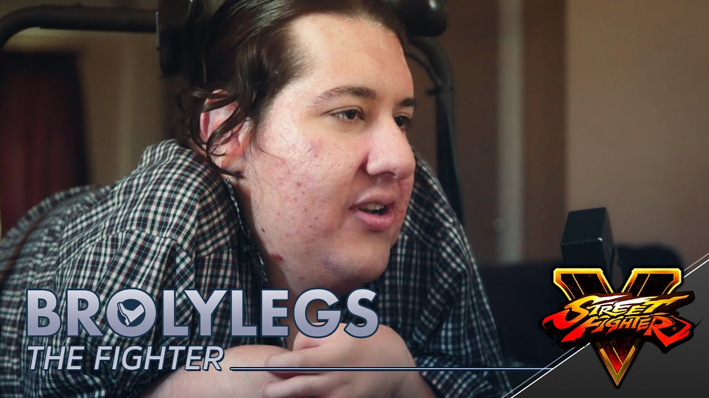

Dale shows and mocks Homeless man getting shot and killed on stream
While Dale was live streaming on kick, he broadcasted a fatal police shooting of Louis Gordon-Hay during a police raid. During the encounter, the suspect said 'kill me,' and Dale continued to mock this action throughout his live streams.
Multiple Channel Takedown Attempts on Joshuas Cornstar
Cornstar
Dale Allegedly filed 55+ false copyright claims using ThumbmediaNet. These actions have involved flagging, reporting, or making false claims against in an effort to have it removed from the platform
Multiple Channel Takedown Attempts on Symphony Discord
Symphony
Constant attacks by accounts made by Covenant users with the intention of getting the server banned. Including a certain picture of Dale’s car outside his GNC, who he unjustly and dishonestly blamed on TrevorBelmont later
Dale Wilson fakes a legal proceeding against Chelka's Youtube Channel
Chelka
LowTierGod claims to possess court documents with the intention of removing my Chelka's Youtube videos. Dale also issued False Copyright Strikes to his channel.
On July 22, 2022, LowTierGod falsely issued multiple copyright strikes against Revolver Theory. These claims were subsequently reviewed and cleared by YouTube.
GreyRaven15 Received a copyright strike on YouTube from Low Tier God for an Injustice 2 video featuring gameplay of a match against his characters, even though he didn't use his content.
LTG Rocks, a former moderator, chose to step away due to perceiving Dale's streams as becoming monotonous and diluted. In response, Dale resorted to doxing LTG Rocks on a livestream and publicly reprimanded him.
Dale Wilson, known as LowTierGod, received a strike on his primary YouTube channel that prevented content creation. He started streaming on an alternate channel, but YouTube eventually banned both of his accounts for violating their policies.
On 15 September, 2021, Dalauan Sparrow continued his hours-long, days-spanning campaign against ROTKLLL for her crime of a tweet by posting revenge porn of her publicly to Twitter and semi-publicly to his Discord.
Dale Wilson fakes a legal proceeding against Sallow Dawn's Youtube channel
Sallow Dawn
LowTierGod claims to possess court documents with the intention of removing Sallow Dawn's YouTube video. He informs YouTube that he intends to take legal action against me, but there are suspicions that these documents are not genuine.
Dale Wilson has trademarked "Low Tier God" with the belief that this would lead to the termination of YouTube channels. However, it's important to note that trademarks alone cannot be legally used to file copyright claims.
Vaultrep claimed to have been doxxed by Dale. According to the information, Dale allegedly obtained Vaultrep's personal information through a counter claim and then shared this information within his Discord community.
Dale Wilson watched a video of a war veteran called, Ronnie McNutt, who sadly ended his life due to PTSD. After watching the suicide Live on YouTube with the audio playing in the background, he laughed and belittled the man for it.
LTG has had a consistent habit of accepting payment from interested players for a set, intentionally losing to get it over with, and taking their money anyway. This often has resulted in chargebacks which ended in the donator's favor as LTG did not follow through on his end of the agreement. LTG is now attempting to counter people charging back when they pay for games and he just suicides the whole set by making this "contract".
Capcom bans CeroBlast, Low Tier God from all events
Capcom ban statement
Capcom has been made aware of a situation where Dalauan “LowTierGod” Sparrow and Christina “CeroBlast” Tran have made offensive statements online,” Capcom said. “This is a clear violation of Capcom’s player code of conduct, so we have concluded that we have no choice but to ban LowTierGod and CeroBlast from all Capcom-owned and/or operated events, including Capcom Pro Tour and Street Fighter League until further notice.”
LowTierStream Archive was among Dale's initial archive channels. Dissatisfied with the existence of this channel, Dale allegedly tweeted out personal information, including the real name, phone number, and address of another individual twice.
Dale Insults Handicapped Player BrolyLegs Losing To Him Online.

BrolyLegs
One of LowTierGod's most notorious moments occurred when he was defeated by Broly Legs in a ranked match. Following his loss, he proceeded to insult Broly Legs.
In a First-to-50 (FT50) challenge, a Chun-Li player named Punishere challenged Dale. Punishere secured victory in all 50 matches, with Dale (LTG) failing to secure a single win. In response, LTG reportedly directed his followers to mass-flag Punishere's Twitch channel, leading to a 24-hour suspension. Subsequently, Dale's own Twitch channel faced similar flagging and was subsequently suspended
PikachuAkuma, also known as JRodriguez, uploads another video showcasing his victory over LTG. In response, LTG deploys his followers to flag and give thumbs down to the video.

 Sallow Dawn
Sallow Dawn

 Capcom ban statement
Capcom ban statement

 Twitch Ban
Twitch Ban